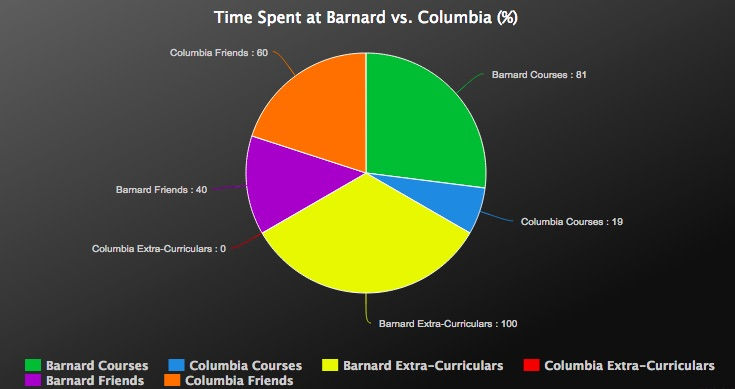

So, What's the Deal with Columbia?
One of the most common and understandable confusions among prospective students (and honestly, even current students) revolves around Barnard's relationship with Columbia. But fear not! I am here with the scoop.
Academics: Many students often question how Barnard can distinguish itself as a Women's College given that Columbia students-- males included-- are able to take classes at Barnard and Barnard students are able to do the same at Columbia. While many of the courses are, in fact, open to all students of the university (this includes CC, BC, CEAS, and GS), there are no required Barnard courses that include male classmates. What this means is that a Barnard student can create whatever kind of college experience she wants in regards to the coeducational classroom environment. She can choose to take all of her courses at Barnard with only Barnard students, or she can choose to cross the street! Additionally, it depends on what department you are studying within, as some (Philosophy for example) are much more integrated with Columbia that others (say, dance).
COLUMBIA COURSES
- Philosophy and Feminism
- Ethics
- Intro to Human Rights
BARNARD COURSES
- Environmental Science
- First-Year English
- Societies/Cultures in Africa
- American History since Civil War
- Food, Ethnicity, and Globalization
- Women and Health
- Unheard Voices: African Women Writers
- Intro to Logic
- Women and Leadership
- Sociology of Gender
